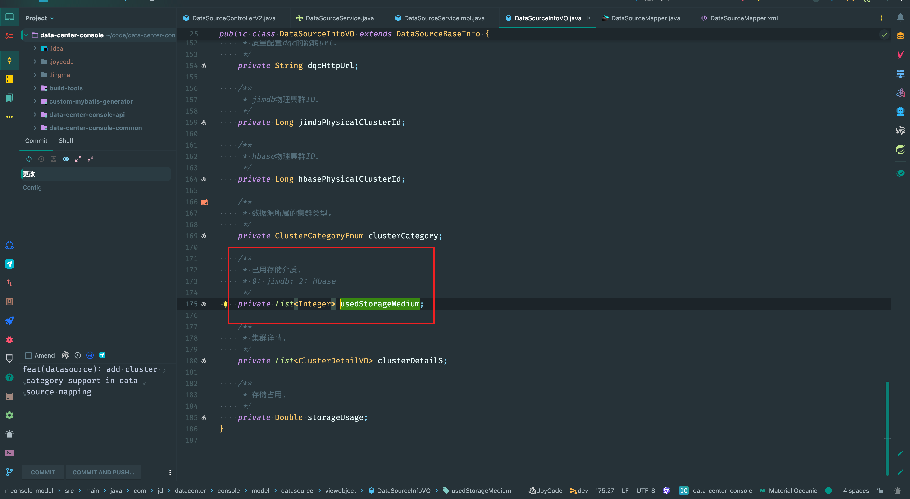

Mybatis collection使用
Info
在执行sql查询时，希望将查询的一列整理成list，并映射到java 实体类的一个list属性中。

使用方式
使用mybatis <resultMap>#<collection>标签。
<resultMap id="DataSourceBaseVOMap" type="com.jd.datacenter.console.model.datasource.viewobject.DataSourceInfoVO"
extends="BaseResultMap">
<result column="desc" jdbcType="VARCHAR" javaType="java.lang.String"
property="desc"/>
<collection property="usedStorageMedium" ofType="java.lang.Integer" javaType="java.util.List">
<result column="cluster_category"/>
</collection>
</resultMap>
部分查询sql如下：
<select id="query" parameterType="com.jd.datacenter.console.model.datasource.requestobject.DataSourceBaseInfoQueryParam" resultMap="DataSourceBaseVOMap">
select t11.cluster_category,
from data_source_base_info t1
inner join (
select distinct
dsfi.data_source_id, pci.cluster_category
from data_source_field_info dsfi
left join field_rel_data_block frdb on dsfi.id = frdb.field_id
left join data_block_info dbi on frdb.data_block_id = dbi.id
left join data_block_rel_physical_cluster dbrpc on dbi.id = dbrpc.data_block_id
left join physical_cluster_info pci on dbrpc.physical_cluster_id = pci.id
<where>
<if test="clusterCategorys != null and clusterCategorys.size() > 0">
dsfi.xbp_status_id = 37
and pci.cluster_category in
<foreach collection="clusterCategorys" item="item" index="index" open="(" close=")" separator=",">
#{item}
</foreach>
</if>
</where>
) t11
on t11.data_source_id = t1.id